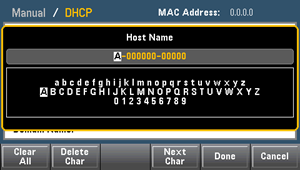
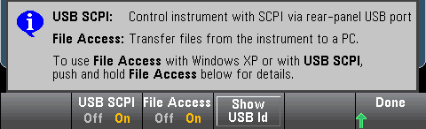
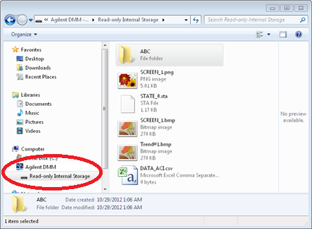

I/O Config configures the I/O parameters for remote operations over the LAN (optional on 34460A), USB, or GPIB (optional) interface.
LAN enables and disables the instrument's LAN interface, and LAN Reset resets the LAN using its current settings and enables DHCP and mDNS. The LAN Reset softkey also clears any user-defined Web Interface password.
LAN Settings opens the menu shown below. Set to Defaults resets the LAN settings to their default values.
Modify Settings enables DHCP or Manual (Auto-IP) assignment of the instrument’s IP address. It also enables configuration of network parameters based on the protocol (DHCP or Manual) selected.
For example, press Host Name or Service mDNS to modify the instrument's host name or mDNS Service Name, shown below.

LAN Services enables and disables the LAN services shown below.
After enabling/disabling one or more services, press Done > Apply Changes. After that, you must cycle instrument power for the new settings to take effect.
The Web server enables or disables instrument programming from the instrument’s Web interface.
The multicast DNS (mDNS) service is for use in networks where no conventional DNS server is installed. Cycling power or resetting the LAN always enables mDNS.
The instrument Telnet port is 5024. Open SCPI sessions on the Telnet connection by entering:
telnet IP address 5024
Refer to the Keysight IO Libraries help for information on the VXI-11, Sockets, and HiSLIP protocols.
USB Settings configures the front panel USB (storage) and rear-panel USB (connectivity) connectors.


|
The SEC licensed option also gives you the ability to enable or disable the front panel USB interface via a USB Front softkey. This option can be ordered as factory option or as customer-installable option. See Models and Options for details. Without this option, the front panel USB interface is always enabled. |
USB SCPI enables or disables the rear-panel USB control port. After changing the interface state, cycle instrument power to make the change take effect. When disabled, the interface cannot be configured by the Keysight IO Libraries Connection Expert utility.
Easy File Access uses media transfer protocol (MTP) to easily download instrument files to your PC. Simply connect the rear-panel USB port on the instrument to a USB port on your PC. The DMM will appear as a read-only drive on your PC's file system.

You can use your PC's standard file management features to copy files from the DMM to your PC.
|
|
To use Easy File Access at the same time that you are remotely programming the instrument with SCPI over the USB interface (USB SCPI), you must have Keysight IO Libraries Suite 16.3 or later installed on your PC. You may download the latest version at www.keysight.com/find/iosuite. |
To use Easy File Access on a PC running the Windows XP operating system, make sure you have Microsoft Windows Media Player 11 for Windows XP SP1, or are using a Microsoft Windows XP SP2, SP3, or a newer version of Windows. You may download this software at www.microsoft.com/en-us/download/details.aspx?id=8163.
GPIB Settings enables or disables your instrument's GPIB interface.
When disabled, the interface cannot be configured by the Keysight IO Libraries Connection Expert utility.
You can also set GPIB address to a value from 0 to 30. After enabling or disabling GPIB or changing the address, cycle instrument power for the change to take effect.